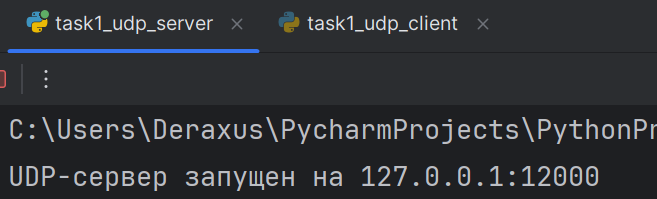
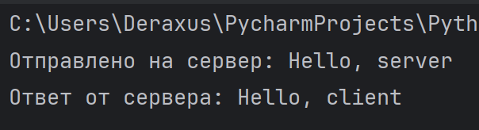
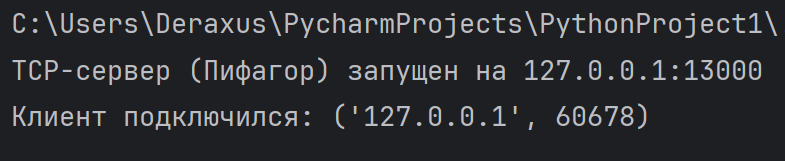
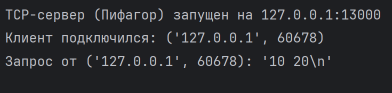
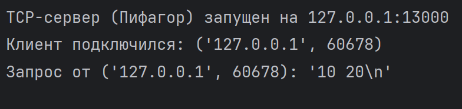
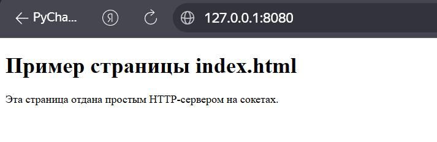
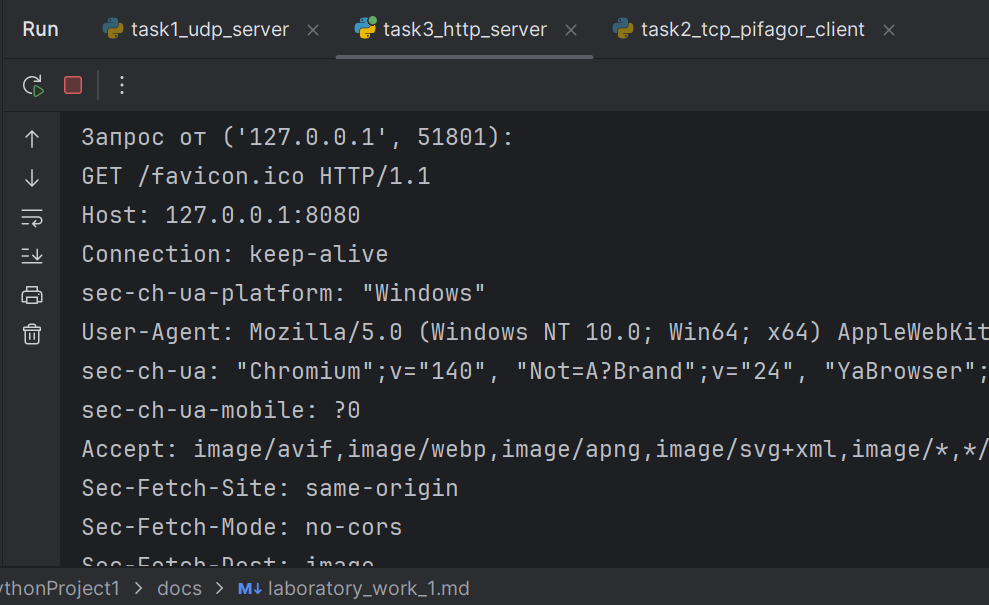
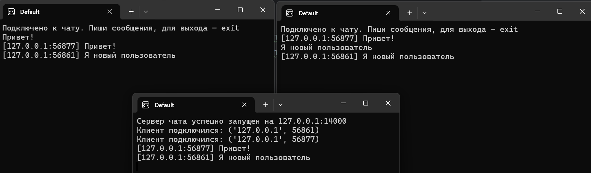

Лабораторная работа 1. Работа с сокетами
Цель работы
Изучить основы сетевого взаимодействия на базе сокетов в языке Python, ознакомиться с протоколами UDP и TCP, а также реализовать простой HTTP-сервер без использования сторонних фреймворков.
Теоретические сведения
Клиент-серверная модель предполагает, что клиент отправляет запросы, а сервер их обрабатывает и возвращает ответы. Такой принцип используется во всех веб-приложениях.
Протокол UDP не гарантирует доставку данных, но обеспечивает высокую скорость передачи. Протокол TCP, в отличие от UDP, гарантирует доставку, порядок пакетов и целостность данных.
Протокол HTTP используется для передачи данных между браузером и сервером. Он основан на клиент-серверной модели и работает поверх TCP.
Ход работы
Задание 1. UDP-клиент и сервер
Были реализованы UDP-клиент и UDP-сервер с использованием библиотеки socket.
Клиент отправляет сообщение "Hello, server", сервер принимает его и отвечает "Hello, client".
Файлы:
- task1_udp_server.py
- task1_udp_client.py
Демонстрация работы:



Результат работы: - сообщение отображается на стороне сервера; - ответ отображается на стороне клиента.
Задание 2. TCP-сервер с теоремой Пифагора
Вариант: Теорема Пифагора.
Клиент вводит два числа a и b, которые отправляются серверу по TCP-соединению.
Сервер вычисляет результат по формуле:
c = sqrt(a² + b²)
После вычисления сервер возвращает результат клиенту.
Файлы:
- task2_tcp_pifagor_server.py
- task2_tcp_pifagor_client.py
Демонстрация работы:

 

Задание 3. HTTP-сервер, отдающий index.html
Был реализован простой HTTP-сервер, который загружает файл index.html и отправляет его браузеру в ответ на GET-запрос.
Файлы:
- task3_http_server.py
- index.html
Демонстрация работы:
 
При обращении к http://127.0.0.1:8080 в браузере отображается HTML-страница.
Задание 4. Многопользовательский чат
Реализован многопользовательский TCP-чат с использованием библиотеки threading.
Сервер: - принимает подключения нескольких клиентов; - хранит список подключенных пользователей; - рассылает сообщения всем участникам чата.
Клиент: - подключается к серверу; - отправляет сообщения; - принимает входящие сообщения в отдельном потоке.
Файлы:
- task4_chat_server.py
- task4_chat_client.py
Демонстрация работы:

Задание 5. HTTP-сервер для хранения оценок
Реализован HTTP-сервер, который:
- принимает данные через POST-запрос;
- сохраняет дисциплину и оценку в файл grades.json;
- отображает список всех оценок через GET-запрос.
После отправки формы используется перенаправление (302 Redirect), чтобы избежать повторной отправки POST-запроса при обновлении страницы.
Файлы:
- task5_http_grades_server.py
- grades.json
Демонстрация работы:

Выводы
В ходе лабораторной работы были изучены основы сетевого взаимодействия через сокеты, различия между протоколами UDP и TCP, а также принципы работы HTTP на низком уровне без использования фреймворков.
Были реализованы UDP- и TCP-клиенты и серверы, многопользовательский чат и веб-сервер с поддержкой GET и POST-запросов без использования сторонних фреймворков.